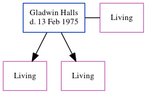

Gladwin John Halls - 1975
[ Home ] | [ Calendar ] | [ Surnames Index ] | [ Errors ] | [ Family History ]Gladwin Halls, the husband of Eileen D Cowell (the second cousin on the mother's side of Nigel Horne), and married Eileen (with whom he had 2 surviving children Christine Anne and Veronica J) in Chichester, Sussex, England on 29 Sept 19451.
He died on 13 Feb 1975.
Citations
- England & Wales, Marriage Index: 1916-2005 Online publication - Provo, UT, USA: The Generations Network, Inc., 2009.Original data - General Register Office. England and Wales Civil Registration Indexes. London, England: General Register Office. © Crown copyright. Published by permission of the Cont
Family Tree
Map
Generated by ged2site. Last updated on Jul 3, 2024
Known Issues
Death date (13 Feb 1975) has no citations
Date of death is known, but not place